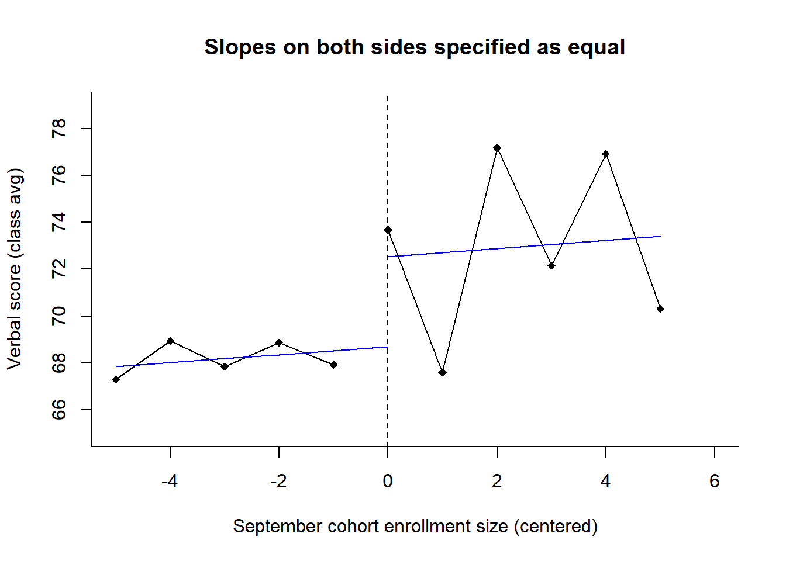

Part 6 Regression Discontinuity
Chapter 9 of Murnane and Willett (2011) helps us see the underlying logic of regression discontinuity designs by helping us see the underlying assumptions and choices we face when we use a difference-in-differences strategy, and then taking us into an example with regression discontinuity in which we examine the functional form. Their chapter begins with several pedagogical examples of DID with the Maimonides data, which are from work conducted by Angrist and Lavy (1999) to investigate the effects of class size on achievement.
6.1 Objectives
- Strengthen our understanding of the underlying assumptions and choices in difference in differences.
- Use this understanding to see the value of regression discontinuity designs.
- Understand the decisions involved in a regression-discontinuity design, starting with functional form and bandwidth.
- Use R code to estimate effects and generate plots.
6.2 Import and Prepare the Data
The data were available as a SAS data set from UCLA’s site, which I had then saved to a CSV file Ch 09 angrist.csv using the following code.
library(sas7bdat) # package for reading SAS files
angrist <- read.sas7bdat("https://stats.idre.ucla.edu/wp-content/uploads/2016/02/angrist.sas7bdat")
write.csv(angrist,file = "Ch 09 angrist",row.names = F)Let’s import the data.
ang <- read.csv("Ch 09 angrist.csv")
str(ang)## 'data.frame': 2019 obs. of 4 variables:
## $ read : num 58 82.6 46.3 66.6 75 ...
## $ size : int 8 9 9 9 10 10 10 10 11 11 ...
## $ intended_classize: num 8 9 9 9 10 10 10 10 11 11 ...
## $ observed_classize: int 8 9 9 11 10 10 10 10 11 17 ...And, let’s rename the columns:
names(ang) <- c("read","coh_size","int_size","obs_size")
head(ang)## read coh_size int_size obs_size
## 1 58.00 8 8 8
## 2 82.63 9 9 9
## 3 46.33 9 9 9
## 4 66.56 9 9 11
## 5 75.00 10 10 10
## 6 80.56 10 10 10Each row in the data frame is a classroom, which is the unit of analysis. Here’s a description of the columns:
readis the class’s reading-achievement score. This is the outcome variable, measured (we assume) at the end of the academic year.coh_sizeis the cohort size, which is the number of students during the enrollment period at the start of the academic year.int_sizeis the intended class size, per the Maimonides rule.obs_sizeis the observed class size later in the academic year.
The causal claim being investigated is whether the policy of splitting a large class into two smaller classes leads to higher reading achievement scores of the class.
Let’s make a group variable that represents the assignment variable based on Maimonides rule. Those cohorts containing over 40 students were split into two smaller classes and assigned to the small condition. We can think of the small status as being the treatment group, with small = 1 for classes that were made smaller, per the exogenous Maimonides assignment rule, and small = 0 for classes that were not made smaller.
ang$small <- ifelse(ang$coh_size > 40,1,0)Let’s center the forcing variable, coh_size, which helps us to interpret the intercept. This is discussed on pp. 178–180.
ang$csize <- ang$coh_size-41Let’s make a subset of the data that have cohort enrollment sizes between 36 and 46 students. This is to help us think through this demonstration. It also makes sense if we are examining the intent of the policy and its causal effect. Here, and in the rest of this code, we’re using the subset() function, but we could easily do this in other ways in R. Instead of that function, we could use indexing, such as ang[ang$coh_size >= 36 & ang$coh_size <= 46, ] to achieve the same result.
ang3646 <- subset(ang, coh_size >= 36 & coh_size <= 46)Let’s examine means of the classes’ reading scores by their enrollment size. We’ll use the aggregate() function to view this by cohort size. We looked at this in a previous section of this tutorial.
ReadByM <- aggregate(read ~ coh_size, data = ang3646, mean)
ReadByM## coh_size read
## 1 36 67.30445
## 2 37 68.94066
## 3 38 67.85400
## 4 39 68.87000
## 5 40 67.92847
## 6 41 73.67670
## 7 42 67.59560
## 8 43 77.17644
## 9 44 72.16160
## 10 45 76.91684
## 11 46 70.30814The following code creates Table 9.1 of Murnane and Willett.
There’s a lot in this code and you can skip over it to get to the meat of the lesson. Basically, we’re using the
table()function to get the number of observations at each cohort size. The output of that is a table, which we turn into a data frame. Because coh_size is a number but thetable()function turned it into a factor, we turn it back into a numeric type variable using theas.numeric(levels())line of code. We then calculate the mean size of the classes by each cohort size, withby(obs_size, coh_size, mean), which we make numeric and round. We identify what its treatment status is with theNominalSizevariable. The last two variables are the mean (across classes) and standard deviations (across classes) at each cohort size.
T9.1 <- as.data.frame(table(ang3646$coh_size))
names(T9.1) <- c("coh_size","freq")
T9.1$coh_size <- as.numeric(levels(T9.1$coh_size)) #Coercing the coh_size variable to be numeric instead of factor
T9.1$IntendedSize<- as.numeric(with(ang3646, by(int_size, coh_size, mean))) #The by() function to get the mean class size by each set of schools of cohort sizes 36 through 46
T9.1$ObservedSize<- round(as.numeric(with(ang3646, by(obs_size,coh_size, mean))),1)#The by() function again, also, rounded to 1 decimal place.
T9.1$NominalSize <- ifelse(T9.1$coh_size>40,"Small","Large") #Labeling schools that, by Maimonides Rule, split into two smaller classes (small)
T9.1$ReadByM <- round(as.numeric(with(ang3646, by(read,coh_size, mean))), 2)#Mean achievement by cohort (unit of analysis is classes, not students, so it's a mean among the classes' means)
T9.1$ReadBySD <- round(as.numeric(with(ang3646, by(read,coh_size, sd))), 2)
T9.1## coh_size freq IntendedSize ObservedSize NominalSize ReadByM ReadBySD
## 1 36 9 36.0 27.4 Large 67.30 12.36
## 2 37 9 37.0 26.2 Large 68.94 8.50
## 3 38 10 38.0 33.1 Large 67.85 14.04
## 4 39 10 39.0 31.2 Large 68.87 12.07
## 5 40 9 40.0 29.9 Large 67.93 7.87
## 6 41 28 20.5 22.7 Small 73.68 8.77
## 7 42 25 21.0 23.4 Small 67.60 9.30
## 8 43 24 21.5 22.1 Small 77.18 7.47
## 9 44 17 22.0 24.4 Small 72.16 7.71
## 10 45 19 22.5 22.7 Small 76.92 8.71
## 11 46 20 23.0 22.6 Small 70.31 9.786.3 Different Difference in Differences
6.3.1 Our first difference
And now for something completely different (well, maybe not completely). Here is a simple first-difference analysis, which M & W discussed on p. 170. Remember that this is a demonstration to help us think about RDD; it’s not the recommended analysis.
First, let’s subset our data to include only the first difference—the cohort sizes of 40 and 41. We can calculate the mean, by their treatment-group status.
ang4041 <- subset(ang, coh_size == 40|coh_size == 41)
with(ang4041, by(read, small, mean))## small: 0
## [1] 67.92847
## ------------------------------------------------------------
## small: 1
## [1] 73.6767Let’s fit a linear model on this, with \(\text{read} = \beta_0 + \beta_{1}\text{small} + \epsilon\) as our regression equation.
(fit4041 <- summary(lm(read ~ small, data = ang4041)))##
## Call:
## lm(formula = read ~ small, data = ang4041)
##
## Residuals:
## Min 1Q Median 3Q Max
## -18.3567 -4.6267 -0.3867 6.1533 15.5933
##
## Coefficients:
## Estimate Std. Error t value Pr(>|t|)
## (Intercept) 67.928 2.856 23.781 <2e-16 ***
## small 5.748 3.283 1.751 0.0888 .
## ---
## Signif. codes: 0 '***' 0.001 '**' 0.01 '*' 0.05 '.' 0.1 ' ' 1
##
## Residual standard error: 8.569 on 35 degrees of freedom
## Multiple R-squared: 0.08051, Adjusted R-squared: 0.05424
## F-statistic: 3.065 on 1 and 35 DF, p-value: 0.08877Note that M & W reported the p-value for a one-sided test but that the statistical test in our output is for the usual two-tailed test \(0.0888\), which is twice as large as what they reported. Usually, we do not report one-sided tests. In any case, if we really wanted to use code to get the one-sided p-value, we could get the estimate and the degrees of freedom from the output and put it inside the pt() function.
pt(-abs(fit4041$coefficients[2,3]), fit4041$df[2])## [1] 0.04438463We’re comparing two cohorts of observations—those on either side of the Maimonides assignment cut-point. If we were to think that no other variables beyond the treatment assignment variable (small) were explaining the difference in reading achievement, we might stop here. There may be a pre-existing relationship, a secular trend, between the forcing variable and the outcome variable. Citing the original authors of the study (Angrist & Lavy) M & W point out that socio-economic status (SES) seems to be related to cohort size, regardless (arguably) of the treatment status. In the population in their study, students living in rural communities are typically of lower SES and these rural communities tend to have smaller cohort sizes. Given that SES is typically related to academic achievement outcomes, there is good reason to believe there is a secular trend.
6.3.2 A plausible second difference
This part corresponds with Pages 172–173. We can roughly estimate this secular trend using the difference in means of cohorts of sizes 39 and 38, and subtract that from our first difference. Let’s subset the data to include these four cohorts and calculate the means of each. Note, that these two new cohorts are on the “control” side of the Maimonides assignment rule. Only one, of cohort size 41, was assigned to the treatment group.
ang3841 <- subset(ang,coh_size >= 38 & coh_size <= 41)
(ReadBy3841M <- aggregate(read ~ coh_size, data = ang3841, mean))## coh_size read
## 1 38 67.85400
## 2 39 68.87000
## 3 40 67.92847
## 4 41 73.67670We can use regression to estimate the difference in differences. Let’s create a new variable, called larger to distinguish the group with the larger enrollment within each pair. In this small example, the cohort with size 39 is larger than the cohort with 38. Likewise, the cohort of size 41 is larger than its counterpart of size 40. This variable is meant to capture the secular trend—that relationship between the forcing variable and reading achievement. This is the second difference.
ang3841$larger <- ifelse(ang3841$coh_size == 39 | ang3841$coh_size == 41, 1,0)For the first difference, we’ll also create a dummy variable, firstdiff. This is to distinguish the groups that participate in the first difference from those that are in the second difference.
ang3841$firstdiff<- ifelse(ang3841$coh_size >= 40, 1,0)We’re interested in \(\beta_3\) in \[read = \beta_0 + \beta_{1}\text{firstdiff} + \beta_{2}\text{larger} + \beta_{3}(\text{firstdiff } X \text{ larger}) + \epsilon \text{.}\]
(fit3841 <- summary(lm(read ~ firstdiff*larger, data = ang3841)))##
## Call:
## lm(formula = read ~ firstdiff * larger, data = ang3841)
##
## Residuals:
## Min 1Q Median 3Q Max
## -33.054 -4.267 1.753 6.853 15.796
##
## Coefficients:
## Estimate Std. Error t value Pr(>|t|)
## (Intercept) 67.85400 3.26658 20.772 <2e-16 ***
## firstdiff 0.07447 4.74622 0.016 0.988
## larger 1.01600 4.61963 0.220 0.827
## firstdiff:larger 4.73223 6.08342 0.778 0.440
## ---
## Signif. codes: 0 '***' 0.001 '**' 0.01 '*' 0.05 '.' 0.1 ' ' 1
##
## Residual standard error: 10.33 on 53 degrees of freedom
## Multiple R-squared: 0.07056, Adjusted R-squared: 0.01795
## F-statistic: 1.341 on 3 and 53 DF, p-value: 0.2709The secular trend is purportedly captured by the second difference, which is estimated as \(\beta_{2} = 1.016\). The difference due to the policy is \(\beta_{3}\), estimated as \(4.732\), which has been adjusted for the 2nd difference. This is the same as Diff1 \(-\) Diff2, or \((73.677 - 67.928) - (68.87 - 67.854)\). The standard error is a little different from that in the book because we’re using regression rather than the direct estimate.
6.3.3 Another plausible second difference
A problem with difference in differences with a data set like this is that there are many ways we could have estimated this second difference. For example, if we used a different pair of contiguous cohort sizes, such as cohorts of sizes 37 & 38, our second difference would be different \((67.85 - 68.94 = -1.09)\), as discussed on p. 175. Here’s another plausible example, with cohorts of sizes 36 through 40 for the secular trend versus the first difference. Let’s subset this part of the data and then plot the means.
ang3641 <- subset(ang,coh_size >= 36 & coh_size <= 41)
mread3640<- aggregate(read~coh_size, data = ang3641[ang3641$coh_size < 41, ], mean)
mread41 <- aggregate(read~coh_size, data = ang3641[ang3641$coh_size ==41, ], mean)The X and Y here are for printing the blue prediction line in the subsequet plot.
X <- c(36:41)
Y <- predict(lm(read ~ coh_size, data = mread3640),
newdata = data.frame(coh_size = X))Here’s the plot:
par(bty = "l")
with(mread3640,
plot(coh_size, read,
ylim = c(65,75), xlim = c(36,43),
pch = 16,
xlab = "September cohort enrollment size",
ylab = "Verbal score (class avg)",
lines(coh_size,read)))
lines(X,Y, col = "blue", lty = 3)
points(mread41, pch = 16)
text(41, Y[6] - .5, "Provisional projection\n for the class size of 41\n if no Maimonides rule\n were in place",
pos = 4,
col = "blue",
cex = .8) Here’s the linear model of this DID, per Table 9.3 on page 180. Notice that we’re using the centered cohort size (
Here’s the linear model of this DID, per Table 9.3 on page 180. Notice that we’re using the centered cohort size (csize), which is \(\text{coh_size}-41\), as our forcing variable. We had created this above with ang$csize <- ang$coh_size-41. This is so we can set the intercept at 41 (explained on pp. 178–180).
(fit3641 <- summary(lm(read ~ csize + small, data = ang3641)))##
## Call:
## lm(formula = read ~ csize + small, data = ang3641)
##
## Residuals:
## Min 1Q Median 3Q Max
## -33.385 -4.519 1.581 7.004 17.113
##
## Coefficients:
## Estimate Std. Error t value Pr(>|t|)
## (Intercept) 68.557 3.511 19.523 <2e-16 ***
## csize 0.124 1.068 0.116 0.908
## small 5.120 4.005 1.279 0.205
## ---
## Signif. codes: 0 '***' 0.001 '**' 0.01 '*' 0.05 '.' 0.1 ' ' 1
##
## Residual standard error: 10.19 on 72 degrees of freedom
## Multiple R-squared: 0.06624, Adjusted R-squared: 0.0403
## F-statistic: 2.554 on 2 and 72 DF, p-value: 0.08481Interpreting this model’s coefficients, we can see that if the cohort of size 41 were not split into 2 classes, its estimated achievement would be \(68.56\) (i.e., the intercept). This is our counterfactual. Being in a small class (e.g., of size 20 or 21 from a cohort of size 41), is estimated to have an effect of \(5.12\) points on the reading achievement test, but the standard error is large in comparison, \(4\). Recall from Table 9.1 that the cohort of size 41 has only 28 observations, so there’s not a lot to work with in regard to statistical power; also, the variance is pretty big, with \(SD = 8.77 \therefore Var = 8.77^2 = 76.9129\).
6.4 Broadening the bandwidth
The fit3641 analysis did not use information on the right side of the discontinuity. It was a single point. Let’s use more information on the right side to see if we can better estimate the secular trend (the second difference).
Here is Table 9.4 on page 183. Now, we’re using our data set that is represented in Table 9.1, with all cohorts from size 36 through 46.
fit3646 <- (lm(read ~ csize + small, data = ang3646))
(fit3646out <- summary(fit3646))
pt(-abs(fit3646out$coefficients[3,3]), fit3646out$df[2]) # one-tailed p-value##
## Call:
## lm(formula = read ~ csize + small, data = ang3646)
##
## Residuals:
## Min 1Q Median 3Q Max
## -33.384 -5.466 1.312 7.184 17.208
##
## Coefficients:
## Estimate Std. Error t value Pr(>|t|)
## (Intercept) 68.6957 1.9178 35.821 <2e-16 ***
## csize 0.1707 0.4360 0.391 0.696
## small 3.8472 2.8112 1.368 0.173
## ---
## Signif. codes: 0 '***' 0.001 '**' 0.01 '*' 0.05 '.' 0.1 ' ' 1
##
## Residual standard error: 9.674 on 177 degrees of freedom
## Multiple R-squared: 0.04579, Adjusted R-squared: 0.035
## F-statistic: 4.246 on 2 and 177 DF, p-value: 0.0158
##
## [1] 0.08644695We can see the effect is not statistically significant.
We can examine the plot of this analysis, along with the projected (counterfactual) estimate if the large-class cohorts’ classes were NOT split at size 41. First, let’s create mean points that we can use in the subsequent plot.
mread3640 <- aggregate(read ~ csize,
data = ang3646[ang3646$coh_size < 41, ], mean)
mread4146 <- aggregate(read ~ csize,
data = ang3646[ang3646$coh_size >= 41, ], mean)Let’s create the Xs and Ys to use in prediction lines in the subsequent plot. Here is the left side prediction (cohorts of size 36 to 40):
X3641 <- data.frame(csize = c(36:41-41)) #Note that the cohort size of 41 (csize = 0) is counterfactual.
X3641$small <- rep(0, length(X3641$csize) ) #Each observation is specified as being in the large-class grp.
Y3641 <- predict(fit3646, newdata = X3641) #Predicted avg reading score of the classHere’s the right side prediction (cohorts of size 41 to 46):
X4146 <- data.frame(csize = c(41:46-41))
X4146$small <- rep(1, length(X4146$csize) ) #Each observation is specified as being in the SMALL-class grp.
Y4146 <- predict(fit3646, newdata = X4146)Let’s create a regular plot with one of the groups. We’ll add the other group’s mean points, next.
par(bty = "l")
with(mread3640,
plot(csize, read,
ylim= c(65,79),
xlim= c(36,47)-41,
pch=18,
xlab = "September cohort enrollment size (centered)",
ylab = "Verbal score (class avg)",
main = "Slopes on both sides specified as equal",
lines(csize, read)))
lines(X3641$csize,Y3641, col="blue") # The linear fit of the observed "large" class group
points(mread4146$csize,mread4146$read,pch=18) # Mean estimates of cohort sizes of 41 to 46
lines(mread4146$csize,mread4146$read) # The linear fit of the observed "small" class group
lines(X4146$csize,Y4146, col="blue")
abline(v=0,h=NULL,lty=2)
It appears as though there is a discontinuity; however, the LATE of small was not statistically significant. This is a rudimentary regression discontinuity analysis.
6.5 Summary up to this point
This example was presented to illustrate how to think about regression discontinuity designs. The above analysis assumes that
- the secular relationship between cohort size and achievement is linear and
- this linearity is the same on both sides of the discontinuity.
An appropriate analysis would include an analysis of the functional form (i.e., linear, quadratic, cubic, and so forth) between the forcing variable and the outcome. And, the analysis would address bandwidth. If we can find an appropriate functional form or bandwidth that extends across this analytic window on both sides of the discontinuity, we can use these larger samples.
6.6 Examining if the results are consistent with different bandwidths
Table 9.5 on p. 184 presents a bunch of estimates from different analytic window widths. The following syntax produces the coefficients from these different widths:
summary(lm(read~csize + small, data = ang3641))
summary(lm(read~csize + small, data = subset(ang, coh_size>=35 & coh_size<=47))) #Analytic window of 6 cohort-size points on either side of the cut
summary(lm(read~csize + small, data = subset(ang, coh_size>=34 & coh_size<=48)))
summary(lm(read~csize + small, data = subset(ang, coh_size>=32 & coh_size<=50)))
summary(lm(read~csize + small, data = subset(ang, coh_size>=31 & coh_size<=51))) #Analytic window of 10 cohort-size points
summary(lm(read~csize + small, data = subset(ang, coh_size>=30 & coh_size<=52)))
summary(lm(read~csize + small, data = subset(ang, coh_size>=29 & coh_size<=53))) #Analytic window of 12 cohort-size pointsThis output is suppressed here. You could generate a table from each analysis using code such as this:
data.frame(BWidth = rep("36,41", 2), summary(lm(read~csize + small, data = ang3641))$coefficients[2:3,1:2])## BWidth Estimate Std..Error
## csize 36,41 0.1239759 1.068103
## small 36,41 5.1201262 4.004709The purpose of doing this is not for p-hacking. It is to see if our conclusions about the effects are stable across analyses that have different analytic window widths. We can think of this as a sensitivity analysis, given the varying bandwidths.
6.7 Functional Form in RDD
—under construction—